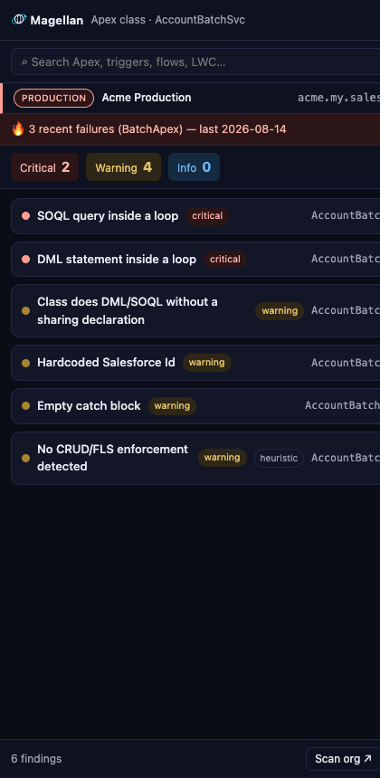
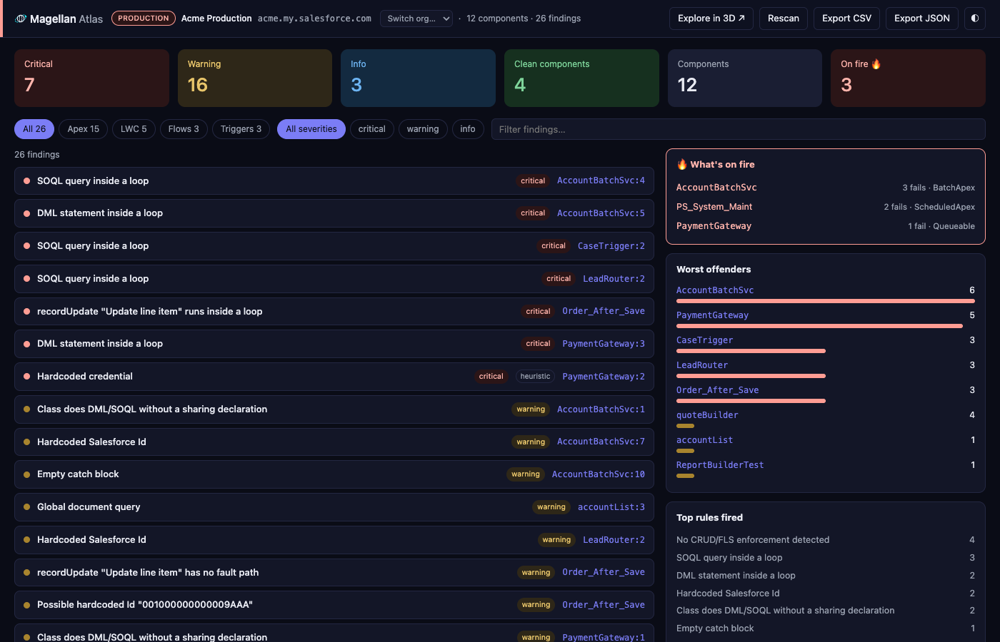
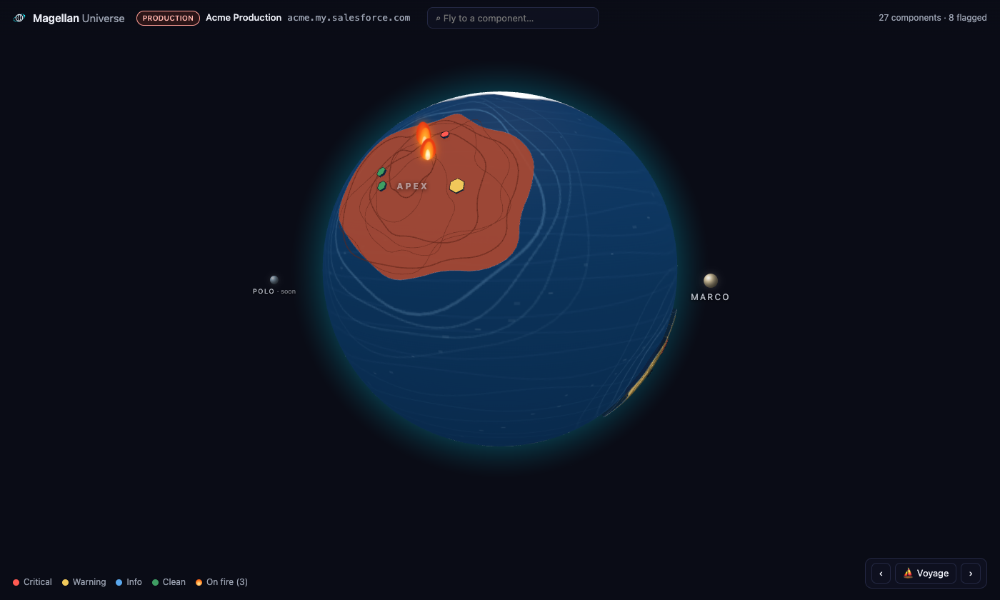

A Chrome side panel that lives next to Setup. Click any Apex class, trigger, Flow, or LWC and Magellan hands you a ranked list of best-practice findings — SOQL in loops, missing sharing, hardcoded IDs, empty catch blocks, unasserted tests, 40+ rules — with the line, the why, and the fix. No CI pipeline, no login, no config. Read-only, and your code never leaves your browser.

Open Magellan next to Setup and it analyzes whatever you click. Or search any component by name and pull it up without leaving the panel.
Apex: SOQL and DML in loops, async jobs in loops, missing with sharing,
CRUD/FLS gaps, SOQL injection, hardcoded IDs and credentials, insecure endpoints,
empty catches, tests with no assertions, SeeAllData=true, cyclomatic
complexity, deep nesting, long methods. Flow: DML and Get Records inside loops,
missing fault paths, System-Mode-Without-Sharing, hardcoded IDs and URLs. LWC:
innerHTML, global document queries, unhandled GraphQL errors, leftover
console.log.
Magellan tokenizes Apex — comments, strings, and inline SOQL are tagged, so a query
quoted in a comment never trips a rule — then builds a loop and method model to ask
structural questions: is this query inside any loop? Every finding carries a
confidence; heuristics that would need a full parser are shipped honestly
labelled heuristic, never presented as certain.
Findings sort critical → warning → info, then by confidence, then by line. Each one shows the offending snippet, a plain-English explanation of the risk, and a concrete fix hint. Click through to that exact component in Setup. Search any class, trigger, flow or LWC by name from the panel itself.
One button scans every Apex class, trigger, active Flow, and LWC in the org and hands you the tech-debt map a lead or an auditor actually wants.

Atlas runs the exact same engine over the org inventory — no new logic, no server. Filter by type or severity, search findings, sort by rule. Worst offenders rank components by severity-weighted debt; top rules fired tells you which anti-pattern dominates. Export CSV or JSON for the ticket.
Static findings say a class could fail. Atlas also reads your recent failed and aborted Apex jobs — batch, queueable, scheduled — and shows what's actually failing in production. A risky-but-working class and a class that aborted 169 times last week are very different problems; Magellan shows you both, and flags the component that's on both lists first.
Signed into several orgs? Every surface names the org it's reading, with a loud PRODUCTION or Sandbox badge, and Atlas has an org switcher. The scan screen itself confirms the target while it runs.
Magellan circumnavigated the globe. So does this: your org's code health as a 3D world map you spin, zoom, and fly through.

Text first, 3D second: the globe is how you find the problem; the side panel is how you read it.
Every other analyzer wants a checkout, a scan job, or an upload. Magellan runs on the session you already have, against the code already in your browser.
Nothing to install in the org — no connected app, no OAuth, no package, no CI step. Sign into Salesforce in Chrome the way you already do. Open the panel. Click.
PMD and Code Analyzer tell you in a pipeline, later. Magellan tells you in Setup, now — the moment you open the class, before it's committed anywhere.
Magellan only ever reads. Source and metadata come from your browser straight to your org and stay there — analysis runs client-side, no servers, no accounts, no telemetry.
Chrome Web Store listing is on the way. Want in early, or a heads-up when it lands? A short email is enough — how big your org is, what your review process looks like today, and which rules you'd want to see first.
chris@creedysolutions.com